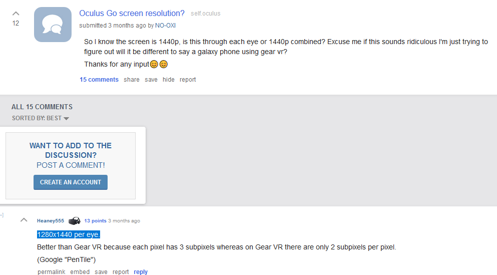
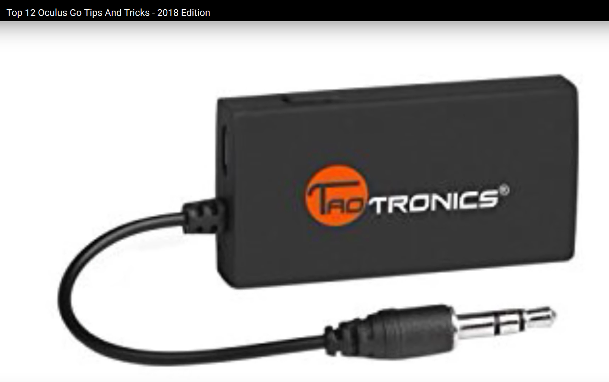
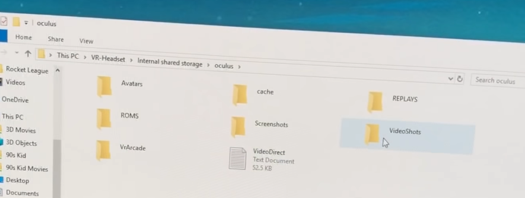
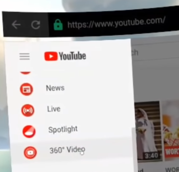

IMPORTANT! - don’t let lenses:
1280 x 1440 - per eye (& 3 sub-pixels): bluetooth transmitter! - get this to attach to the 3.5mm jack (velcro to top of hmd) to send bluetooth audio to wireless bluetooth headphones; Reportedly near-zero latency! folder paths - on device: 360 vids on youtube - on device, oculus browser? 
NOTE: Be sure to maximize QUALITY!
import oculus utilities package - into unity project:
edit -> project -> quality:
set texture compression - to astc.
android api >= 19 (per oculus requirement)set Single Pass rendering:
Organization on oculus developer dashboard).is binary compatible with gear-vr for most apps.
open terminal & type:
then to install:
to see a running debug stack trace from your app on the oculus-go:
not based on eye tracking (unlike some other forms of foveation tech). The high-resolution pixels are “fixed” in the center of the eye texture.
running at 72 Hz is optional.
you can switch modes seamlessly at run time.
another new feature introduced by O-Go is 72 Hz Mode. With this mode O-Go apps can choose to target 72 frames per second instead of the normal 60 frames per second. This mode is strictly optional, & in some cases prohibitively expensive, but can be a significant quality improvement for apps that choose to support it.
the purpose of this mode? - to improve the visual quality of the display. Typically,high frame rates for VR devices are associated with lowering latency, particularly when it comes to positional tracking. O-Go is not a positionally-tracked device, and though lower head tracking latency is comfortable, it’s not the primary reason to run at 72 Hz. The Oculus Go display has been tuned to be comfortable at 60 Hz. 72 Hz Mode allows the display to become brighter without causing a perceptible flicker, which improves the visual quality of the screen. In particular, this mode makes the display brighter, and causes colors to pop and appear warmer.
optimizing for 72 hertz - any app that can accommodate 72 frames per second rendering should use 72 Hz Mode when running on O-Go. This means rendering at least 2.8 ms faster than usual, which is not always possible. Combined with Dynamic Throttling and Fixed Foveated Rendering, some apps may be able to simply toggle this mode on and run at a higher frame rate. Others may need to do significant optimization to achieve this level of performance. Again, running at 72 Hz is optional.
regarding video - apps should carefully consider 72 Hz Mode. An app that renders video at 30 or 60 frames per second will look better at 60 fps than at 72. However, 24 Hz video looks a lot better when running in 72 Hz Mode because the display & the video frame rates can be synchronized to avoid tears (24 is an even divisor of 72).